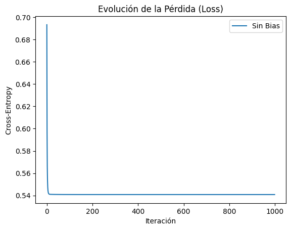
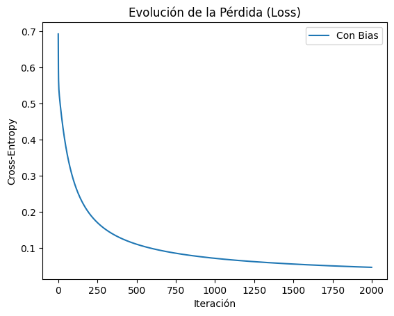

class LogisticRegression:def__init__(self, learning_rate=0.1, n_iterations=1000, add_bias=True):self.lr = learning_rateself.n_iter = n_iterationsself.add_bias = add_biasself.theta =Noneself.losses = []def _sigmoid(self, z):return1/ (1+ np.exp(-z))def fit(self, X, y):ifself.add_bias: X = np.hstack([np.ones((X.shape[0], 1)), X]) n_samples, n_features = X.shapeself.theta = np.zeros(n_features)# Descenso de gradientefor _ inrange(self.n_iter): t = np.dot(X, self.theta) # logit: X @ theta h =self._sigmoid(t) # hipótesis: h = g(z) gradient = np.dot(X.T, (h - y)) / n_samples # gradiente: (1/n) * X^T @ (h - y)# Nota: Usamos promedio del gradiente para estabilidad# actualización: theta = theta - alpha * gradienteself.theta -=self.lr * gradient# pérdida: Binary Cross-Entropy loss =-np.mean(y * np.log(h +1e-15) + (1- y) * np.log(1- h +1e-15))self.losses.append(loss)def predict_prob(self, X):ifself.add_bias: X = np.hstack([np.ones((X.shape[0], 1)), X])returnself._sigmoid(np.dot(X, self.theta))def predict(self, X, threshold=0.5):returnself.predict_prob(X) >= threshold
Modelo SIN Bias.
El bias permite que la frontera de decisión se desplace. Sin este término, la frontera de desición siempre debe pasar por el origen \((0,0)\), lo cual limita la capacidad del modelo si los datos están desplazados.
model_no_bias = LogisticRegression(add_bias=False)model_no_bias.fit(X, y)# curvas de aprendizajeplt.plot(model_no_bias.losses, label="Sin Bias")plt.title("Evolución de la Pérdida (Loss)")plt.xlabel("Iteración")plt.ylabel("Cross-Entropy")plt.legend()plt.show()

La fontera de decisión es la línea donde \(h_{\theta}(x) = 0.5\).
model_with_bias = LogisticRegression(add_bias=True, n_iterations=2000)model_with_bias.fit(X, y)# curvas de aprendizajeplt.plot(model_with_bias.losses, label="Con Bias")plt.title("Evolución de la Pérdida (Loss)")plt.xlabel("Iteración")plt.ylabel("Cross-Entropy")plt.legend()plt.show()

plot_decision_boundary(X, y, model_with_bias, "Modelo CON Bias")